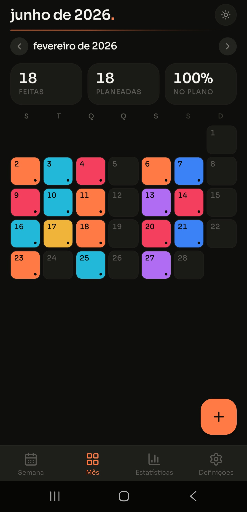
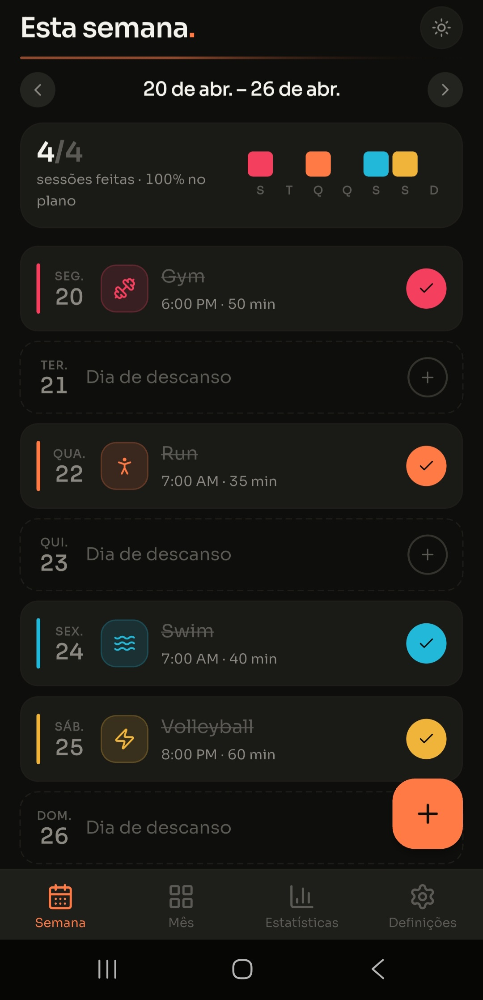
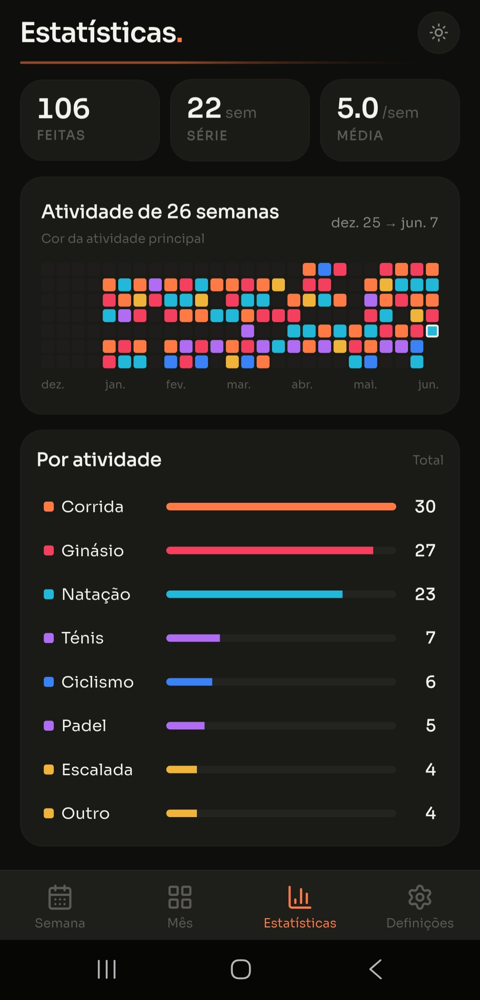
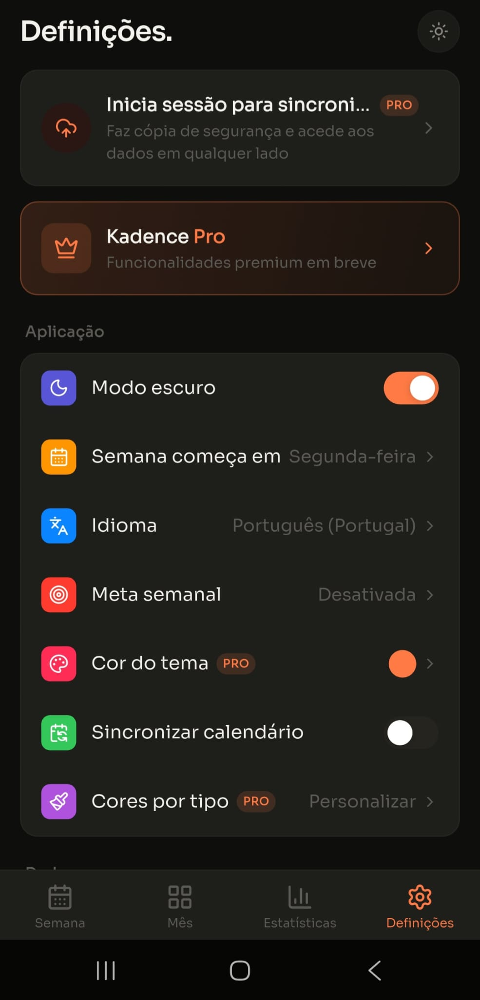

Um planeador calmo e minimalista para o teu treino semanal. Regista sessões, constrói séries, acompanha o teu progresso.



Funcionalidades
Feita para quem treina regularmente e quer uma forma limpa de planear, registar e rever a semana.
Vê toda a tua semana de relance. Desliza entre semanas, toca num dia para adicionar ou rever sessões. A grelha mensal dá-te a visão geral.
Um mapa de calor de 26 semanas mostra o teu ritmo de treino. Cores por desporto, esmaecido para sessões planeadas. A tua consistência, visualizada.
Corrida, natação, ciclismo, caminhada, yoga, padel, escalada e muito mais. Cada tipo tem a sua cor. Adiciona desportos personalizados de mais de 40 categorias Strava.
Define um objetivo — 3 sessões por semana, 5, 7. Um anel de progresso acompanha as sessões concluídas. Responsabilidade simples.
Sincroniza as sessões planeadas com o calendário do telemóvel automaticamente. Edita no Kadence, vê em todo o lado.
Importa todo o teu histórico Strava — anos de corridas, pedaladas e natação iluminam o mapa de calor instantaneamente. Novas atividades Strava marcam automaticamente as sessões planeadas como concluídas.
Planear
Cada dia tem um cartão. Toca para adicionar uma sessão — escolhe o desporto, define a hora, adiciona notas. Desliza para navegar entre semanas. Duplo toque para marcar como feito.
Rever
O ecrã de estatísticas transforma meses de sessões numa imagem clara — séries, mapas de calor, análise por tipo. Sabe onde és consistente e onde estás a falhar.
Personalizar
Modo escuro ou claro. Escolhe a cor de destaque entre 7 paletas. Personaliza as cores dos tipos. Define o dia de início da semana. Escolhe o idioma.

Preços
A experiência principal é completamente gratuita. Faz upgrade para Pro para estatísticas avançadas, sincronização na cloud e cores personalizadas. O Pro chega em breve — a app gratuita já está disponível.
$0 / para sempre
Desde €9.99 / ano
ou €1.99 / mês